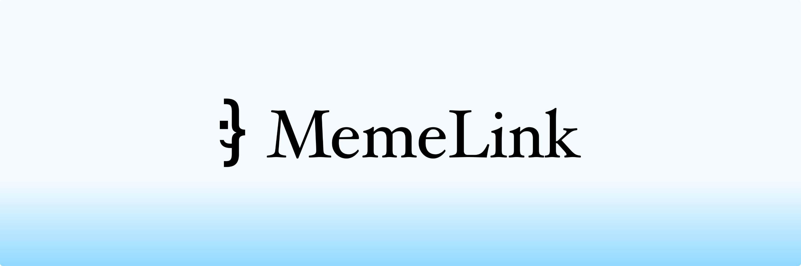
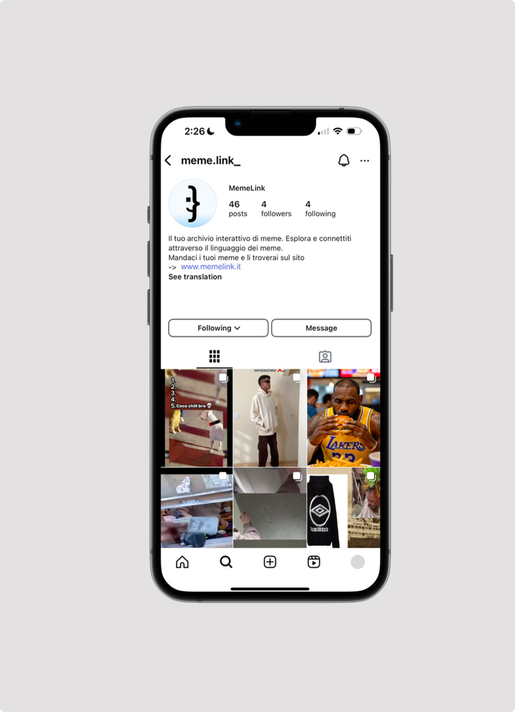
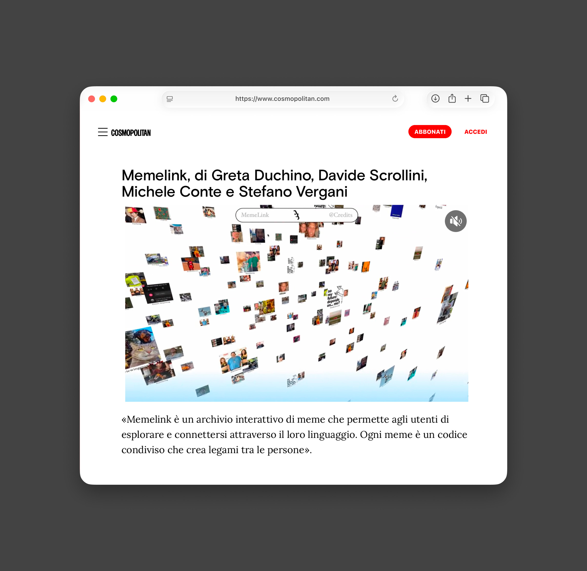
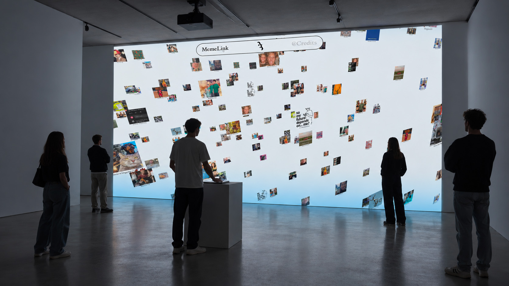

MemeLink
Il progetto
MemeLink nasce dall’idea di esplorare il ruolo dei meme nella comunicazione contemporanea, riconoscendoli non soltanto come contenuti ironici, ma come un vero e proprio linguaggio collettivo, capace di creare connessioni tra persone, culture e generazioni. Ogni meme racchiude un significato, un riferimento culturale o un’esperienza condivisa. Attraverso la loro diffusione e continua reinterpretazione, i meme diventano parte di un immaginario comune, evolvendosi insieme alle comunità che li utilizzano.
Da questa riflessione nasce MemeLink, un archivio digitale interattivo che permette agli utenti di esplorare il mondo dei meme e scoprire le connessioni che li legano, trasformando un fenomeno tipicamente legato ai social media in un’esperienza di scoperta e partecipazione.
Il progetto è stato concepito come un’installazione interattiva e immersiva, in cui lo spazio fisico diventa un’estensione dell’archivio digitale. Attraverso un sistema di proiezione e un’interfaccia navigabile tramite trackpad, gli utenti possono interagire direttamente con i contenuti, esplorando i meme all’interno di un ambiente pensato per valorizzarne il linguaggio visivo e culturale.
MemeLink propone una nuova prospettiva su un linguaggio che utilizziamo quotidianamente, trasformando contenuti digitali spesso effimeri in elementi da esplorare, interpretare e mettere in relazione. Perché dietro ogni meme non c’è soltanto una battuta, ma un codice condiviso che ci connette.



